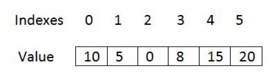
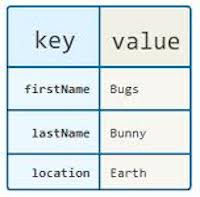
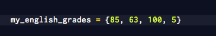
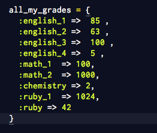

Arrays and Hashes
Sun Oct 26th, 2014
Arrays and hashes are data structures, which are organized means of storage. We can think of them as “expanded variables” - a variable holds one value whereas arrays and hashes hold many.
ARRAYS
We can think of an arrays as a row of multiple container. Each of these containers can hold an element or be empty, and they are numbered (indexed) sequentially starting at 0. It might seem confusing at first - why do arrays start counting their elements at index 0? Well, index 0 is the offset from the beginning of the array. It marks the position of the container that holds the first element.
Like this:
So why is this indexing good for?
Arrays give us a way of storing data in order. We can select/access these objects (because everything in ruby is an object) based on this consecutive index. The advantage of this structure gets especially highlighted when we need to loop through our array. All we need to do is to initialize the index to 0 and increment it by 1 for every iteration.
HASHES
Hashes are also ordered data structures where objects are stored in pairs, consisting of a key and a value.
Like this:
The value is retrieved by means of the key. This structure enables us to perform more complex filtering of our data in addition to basic key-value retrieval.
ARRAYS VS. HASHES
Arrays and hashes are very closely connected. In a way, arrays are hashes but they key values are consecutive integers, and hashes are arrays but their indices can be anything, not just numbers. Their difference come in handy depending on what we want to store.
For example:
It would make sense to store all of my English class exam grades in an array, like this:
If I want to access my 3rd grade, all I have to do is to type puts my_english_grades[2].
However, if I suddenly decide to store all my grades for all my classes, it would make sense to store them in as a hash:
Here if I want to access the same 3rd english grade all I need to type is puts all_my_grades[“english_3”]
Hope this helps!